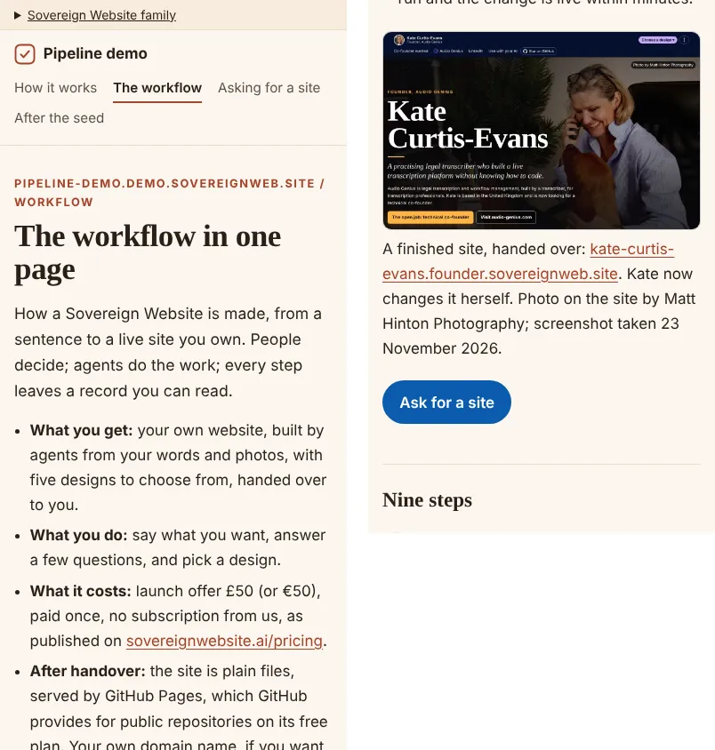

Synthetic users: the pipeline demo's workflow page, round 3
Page: https://pipeline-demo.demo.sovereignweb.site/workflow/ at b4cdba8 (v0.1.8). Run: 23 November 2026, about 16:20 UTC, by design.b.rounds. Would you want one? 2 of 5 (rounds 1 and 2: 2 of 5). Look 3.2 (4, 3, 3, 3, 3). Nobody said "wow". The review.
The same method and personas as round 1. These are simulations, and never replace the measured checks or a real person.
| Persona | Want one? | Look | In their words |
|---|---|---|---|
| Startup founder, no site | yes | 4 | "Fifty pounds 'paid once, no subscription from us', and a real founder's site I can click, Kate's." |
| Team lead, renting from a website builder | no | 3 | "It says 'without one, a partner does it for you' but not who the partner is or what they charge, and nothing about moving the site and content we already have off our builder." |
| Self-employed (a plumber), no site | yes (no in round 2) | 3 | "'Change Saturday opening to 9 till 1' is exactly the sort of thing I would ask, and £50 once is less than a day's materials." He skipped "public repositories". |
| Low-vision reader | no (yes in round 2) | 3 | "The only example is a screenshot whose text I cannot read, and the page does not say whether the site I would get works for readers like me." |
| Sceptical friend | no | 3 | "The one worked example stops at 'next' ... and 'a price for hosting by us is not set yet', so it feels like a demo, not a service." |
What changed
- The "Changing it later" example won the plumber, whose round 2 no was about small edits.
- The Kate screenshot was the second pull to yes, but it sits on the second phone screen, and its text cannot be read at phone size (the low-vision reader's no).
- Still open: who the partner is and what a change costs without a Claude plan (three personas); "GitHub Pages" and "public repositories" read as jargon (three); the Car Buyer story still ends at "next".
